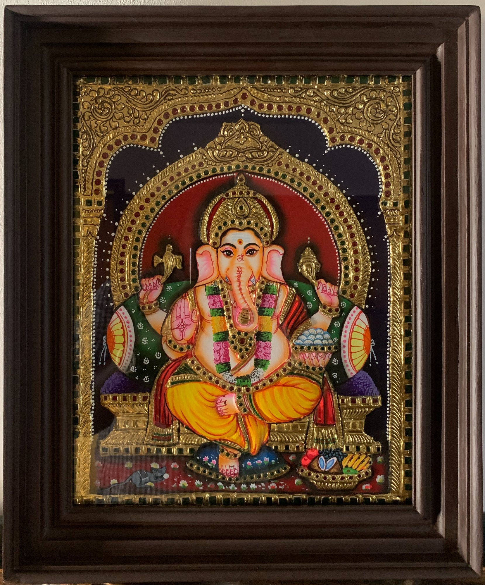
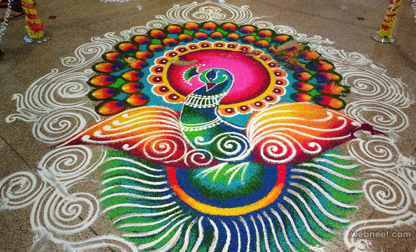
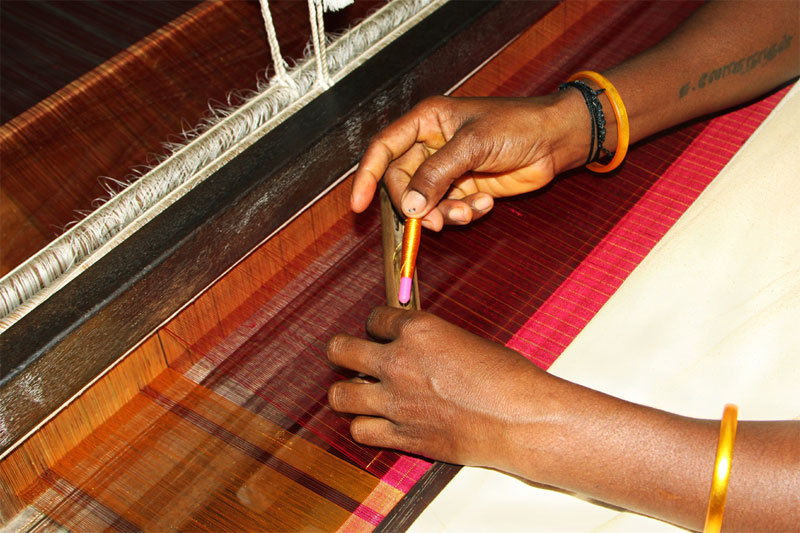

Famous Art and Crafts
Tamil Nadu is renowned for its exquisite art and craft forms, which reflect the state's rich cultural history. Here are some of the most famous traditional crafts from Tamil Nadu.

Tanjore Paintings:
Tanjore paintings are known for their rich colors, surface richness, and the use of gold foil. Originating from Thanjavur, these paintings often depict Hindu gods and are characterized by their intricate detailing.

Kolam:
Kolam is a traditional floor art made using rice flour or chalk powder. These designs are drawn at the entrance of homes and temples, often forming intricate patterns that reflect the artistic culture of Tamil Nadu.

Kanchipuram Silk:
Kanchipuram silk is renowned for its vibrant colors and durability. The silk sarees are woven with traditional designs and are a significant part of Tamil Nadu's textile heritage.